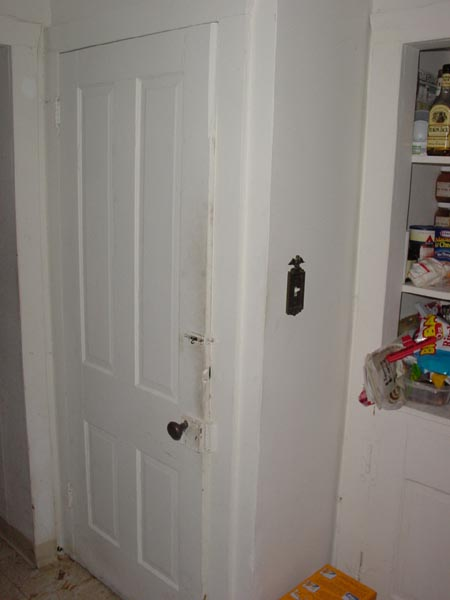

|  |
|
So here's the door going into the basement. Note the positively ancient style doorknob and high-tech post-and-hole lock to keep the door from opening when it shrinks in the wintertime. It's summertime so the non-ventilated humidity makes sure that's not as big a concern. Also of note is the liquor and canned goods in the wall cabined and the fine layer of dirt stains on the edge of the door. [ Yank the humidity swollen door open and go down | Get distracted by the in-the-wall cabinet ] |